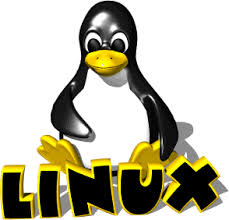

Linux

Il kernel Linux vede la luce nell'agosto 1991 grazie al giovane studente finlandese Linus Torvalds che, appassionato di programmazione, era insoddisfatto del sistema operativo Minix (sistema operativo unix-like destinato alla didattica, scritto da Andrew Tanenbaum, professore ordinario di Sistemi di rete all'università di Amsterdam), poiche' supportava male la nuova architettura i386 a 32 bit, all'epoca tanto economica e popolare. Così Torvalds decise di creare un kernel unix con lo scopo di divertirsi e studiare il funzionamento del suo nuovo computer, che era appunto uno 80386.
Inizialmente, Linux (il sistema operativo basato sul kernel programmato da Torvalds) per girare utilizzava, oltre al kernel di Torvalds, l'userspace di Minix. Successivamente, Linus decise di rendere il sistema indipendente da Minix, anche perché non ne gradiva la licenza che lo rendeva liberamente utilizzabile solo a fini didattici e decise, quindi, di sostituire quella parte del sistema operativo col software del progetto GNU. Per fare cio', Torvalds doveva cambiare licenza e adottare la GPL, che tra l'altro considerava buona per il suo sistema operativo a prescindere dal software GNU stesso. E così la licenza cambio' in GPL.
Linux, all'inizio, era un semplice emulatore di terminale scritto in C e assembly, e non aveva bisogno di appoggiarsi a un sistema operativo. L'emulatore di terminale avviava e gestiva due thread: uno per mandare segnali alla porta seriale, uno per riceverli; quando poi Linus ebbe bisogno di leggere e scrivere file su disco, questo emulatore fu esteso in modo che potesse gestire un file system. Lentamente, questo programma si trasformò in un intero kernel in grado di gestire un sistema operativo e Linus inizio' a documentarsi sulle specifiche POSIX, chiedendo assistenza sul newsgroup. La prima versione del kernel Linux, la 0.01, fu pubblicata su Internet il 17 settembre 1991 e la seconda nell'ottobre dello stesso anno.
Torvalds preferiva chiamare Freax il kernel a cui stava lavorando ma Ari Lemmke, assistente alla Helsinki University of Technology che gli aveva offerto lo spazio FTP per il progetto (ftp.funet.fi), preferi' assegnare alla subdirectory dedicata il nome alternativo di lavorazione Linux.
Sin dalla versione 0.01 si poteva compilare e far partire la shell GNU Bash. Fino alla versione 0.10 era richiesto un computer con Minix per configurare, compilare e installare Linux perché quest'ultimo usava il filesystem del sistema sul quale si appoggiava; dalla versione 0.11 poteva essere compilato da Linux stesso. Presto i sistemi Linux superarono Minix in termini di funzionalita': Torvalds e altri sviluppatori della prima ora di Linux adattarono il loro kernel perche' funzionasse con i componenti GNU ed i programmi in user-space per creare un sistema operativo completo, pienamente funzionante e libero.
Linux e' una famiglia di sistemi operativi di tipo Unix-like, rilasciati sotto varie possibili distribuzioni, aventi la caratteristica comune di utilizzare come nucleo il kernel Linux.
Il suo sviluppo e' sostenuto dalla Linux Foundation, un'associazione senza fini di lucro nata nel 2007 dalla fusione di Free Standards Group e Open Source Development Labs.Oggi molte societa' importanti nel campo dell'informatica come IBM, Sun Microsystems, Hewlett-Packard, Red Hat, Canonical e Novell hanno infatti sviluppato e rilasciato, e continuano a farlo, sistemi Linux.